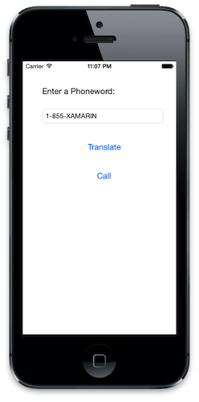

Exercise 3: Adding Behavior to Phoneword
Duration
15 minutes
Lab Goals
The goal of this lab will be to provide behavior for the Phoneword application created earlier in this session. The current application displays a GUI that consists of a Label, Text Field and two Buttons as shown on the left:
|  |

|
Our steps for this exercise will be to add some behavior that will:
- Respond to a touch event on the Translate Button.
- Retrieve the text typed into the Text Field.
- Dismiss the On Screen Keyboard once we are done editing the text.
- Translate the alphanumeric text into a traditional phone number, where ABC ➡ 2, DEF ➡ 3, etc.
- Update the
Titleof the Call Button to include the translated numeric phone number; we will also update the enabled state so the user can tap the button (these are shown in the second screenshot, above on the right). - Respond to a touch event on the Call Button, which will ask the user if they'd like to place a call and if so, attempt to place a call to the given number using the iOS phone dialer.
Required Assets
Included with this exercise is a folder with resources that you will need in order to complete the lab. The folder name is Part 03 Resources. Make sure you have this folder before you begin. This folder also contains a starting solution with the completed user interface if you were unable to finish the prior exercise, or want to start with a fresh project.
Exercise Challenge
Using the Worksheet to give you the information you need, try to accomplish the (5) steps outlined above for this exercise. If you need some additional help, there are step-by-step instructions below. Here are some notes to help you get started:
- The translation of the phone number will be done by an existing static method called
PhonewordTranslator.ToNumberwhich looks like. - All of the work can be done in the
ViewDidLoadoverride of the root View Controller. - Feel free to experiment and ask questions during the lab - there is a completed version of the lab in the resources folder if you don't have enough time to complete it as written here.
public static string ToNumber(string alphanumericNumber);
PhoneTranslator.cs, make sure you can find it and add it to your project. You will use this method as part of Step 3 above.
Steps
Add PhoneTranslator to our project
We need to add the code to translate the alphanumeric phone number into a numeric phone number. The code has already been written for you and is in the Part 03 Resources/PhoneTranslator.cs source file. If you need some help with this step, check the worksheet.
Open the file and examine the contents - it has a single public static method, which you will be using to translate the number from alphanumeric text into a straight numeric number.
Implement the Logic for the Translate Button
Open the PhonewordViewController.cs file and locate the
ViewDidLoad method - remember this is called once the view has been loaded from the Storyboard and is typically where you will place initialization logic for the screen.
We need to handle the TouchUpInside event for our
TranslateButton - this will be raised when the user taps on the translate button in the UI. The handler should:
- Get the phone number from the PhoneNumberText control.
- Hint: use the
Textproperty.
- Hint: use the
- Translate it using the
PhonewordTranslator.ToNumbermethod.- You will need to add a namespace to access it.
- This method returns
nullif the number could not be translated.
- Change the text of the CallButton to include the phone number when it is successfully translated.
- Hint: use the
SetTitlemethod.
- Hint: use the
- Enable the CallButton so it can be tapped to dial the phone.
- Hint: use the
Enabledproperty.
- Hint: use the
- Since the button is enabled by default, go ahead and disable the button initially - this should be done outside the event handler, as well as if the number translation fails.
- Make sure to reset the title of the CallButton if the number translation fails.
Test the Application
- The TranslateButton is now wired with behavior, so lets test it. Run the application in either the simulator or on a physical device from Xamarin Studio.
- The application should build and if everything has gone well our app will display and show a disabled Call Button.
- Touch the Translate button in our app and verify the Call button title changes to "Call 1-855-9262746", and the button becomes enabled.
- Try changing the phone number in the Text Field. Notice that iOS pops up an on-screen keyboard automatically. However, it stays on screen once it has been activated!
Adding support to dismiss the on-screen keyboard
- To dismiss the on-screen keyboard, we need to wire into the
ShouldReturnevent. This then allows us to resign focus from the Text Field by calling theUITextField.ResignFirstRespondermethod. You can add this handler in theViewDidLoadmethod. - Run the application again and tap in the Text Field to show the on screen keyboard, then press the Return button on the keyboard to see the keyboard get dismissed.
Implement the Logic for the CallButton
Next, let's add some behavior to the CallButton. In this case, we will need to perform the following tasks:
- Wire up an event handler to
TouchUpInsideon theUIButton- just like we did earlier for the TranslateButton. Just as before, you can place this into theViewDidLoadmethod. - Prompt the user using a
UIAlertViewto ask if they'd like to dial the number. If you've not used this API before, read about Showing Alerts.- Supply a
TitleandMessageand use "Yes" and "No" as your button title parameters to the constructor (CancelButtonTitleand singleOtherButtonTitle). - The
UIAlertViewDelegateparameter can benull. - Wire up to the
Dismissedevent in order to detect which button was pressed. You will need to check theButtonIndexproperty passed in theEventArgsto determine which button was pressed. TheUIAlertViewhas public properties on it which give you the indexes assigned to each of your buttons. - Your logic to dial the phone should be placed in this handler if the
ButtonIndexindicates it was the second button (Yes). - Use the
UIAlertView.Showmethod to display the dialog to the user - this returns when the dialog is dismissed.
- Supply a
- If the user responds affirmatively, then use the
UIApplicationsingleton to invoke theOpenUrlmethod to dial a telephone URL. (See the Worksheet section on Dialing a Phone Number.) - You can retrieve the singleton using the static property
UIApplication.SharedApplication. - You will need to create a new
NSUrlobject to pass toOpenUrl- there is a constructor that takes a string for this. - Use the "tel:" prefix to dial a phone number with
OpenUrl. - Be aware this feature only works on real devices - the simulator will ignore this call and return
false. - Run the application a final time and try out your logic. If you have a physical device and it has been setup for development, you can try running the on on the device to really see it place a call.
Summary
In this lab, we have built our first full-blown Xamarin.iOS application and learned how to use Xamarin Studio. In the next lab, we are going to extend this application by adding another screen and introducing the Model View Controller (MVC) pattern in iOS.